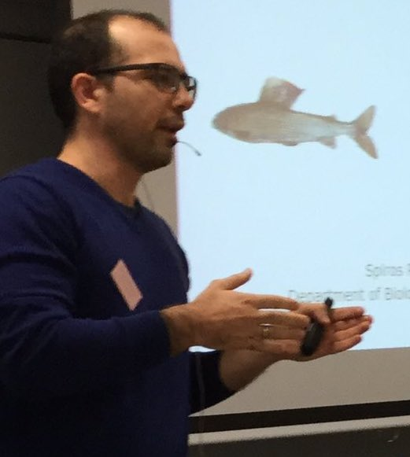

Hello! I am Spiros Papakostas, Assistant Professor at the
International Hellenic University.

I work in Thessaloniki, with wife & kids at Ioannina. I thus travel frequently
(weekly/bi-weekly) between the two cities. I try to reduce travel expenses by carpooling.
If interested drop me an e-mail at: spiros.papakostas@gmail.com
Ονομάζομαι Σπύρος Παπακώστας και εργάζομαι ως Επίκ. Καθ. στο Διεθνές Πανεπιστήμιο.
Η οικογένειά μου ζει στα Ιωάννινα και ως εκ τούτου ταξιδεύω συχνά μεταξύ των δύο πόλεων.
Ψάχνοντας να μειώσω τους λογαριασμούς του ταξιδιού (αλλά και για περιβαλλοντολογικούς σκοπούς)
είμαι ανοιχτός στην ιδέα του carpooling, να μοιραστώ δηλαδή τα έξοδα ταξιδίου με κάποιον ή κάποιους.
Υπολογίζω τη μεταφορά ενός ατόμου στα 15 ευρώ ενώ από δύο άτομα και πάνω στα 10 ευρώ. Φεύγω για Ιωάννινα
συνήθως Πέμπτες ή Παρασκευές και επιστέφω Θεσσαλονίκη τις Κυριακές (ή σπανιότερα Δευτέρες). Αν ενδιαφέρεστε
στείλτε μου e-mail στο: spiros.papakostas@gmail.com